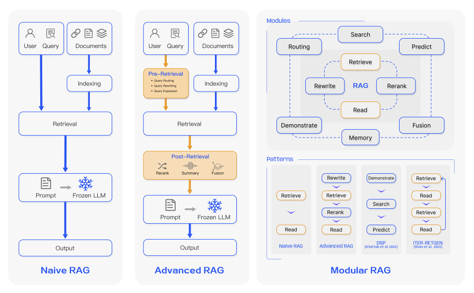
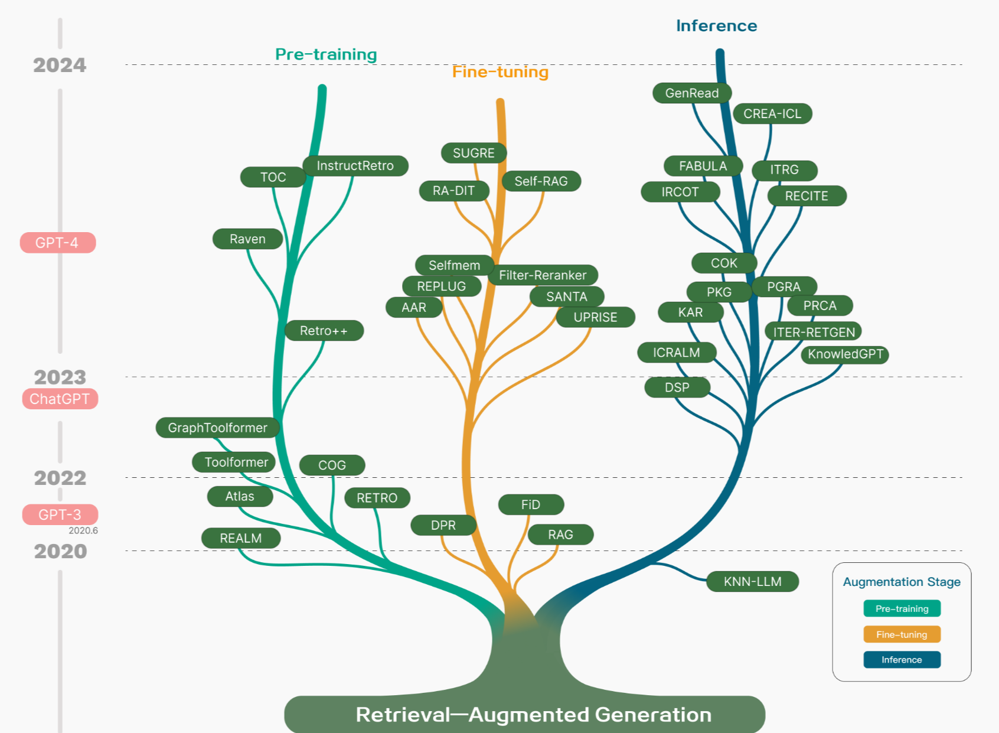
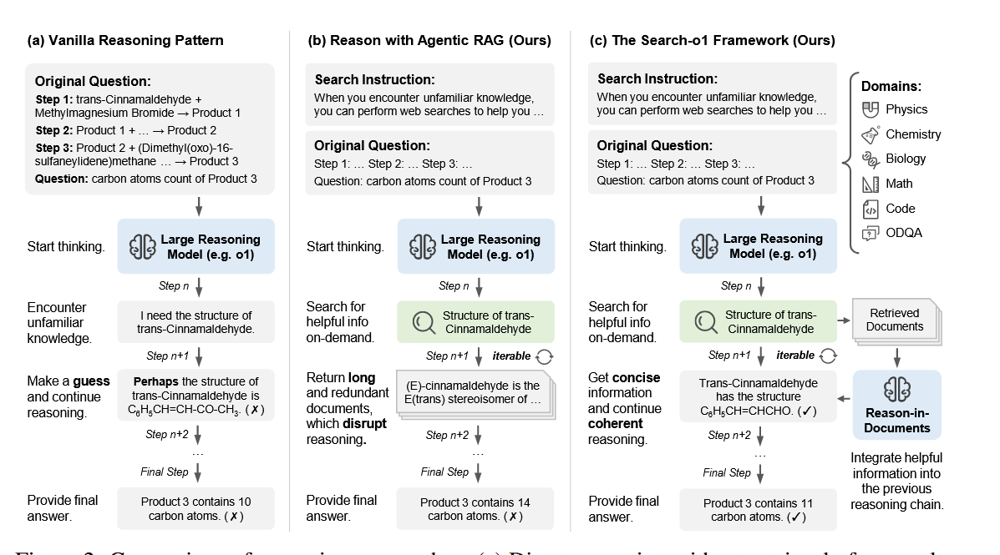
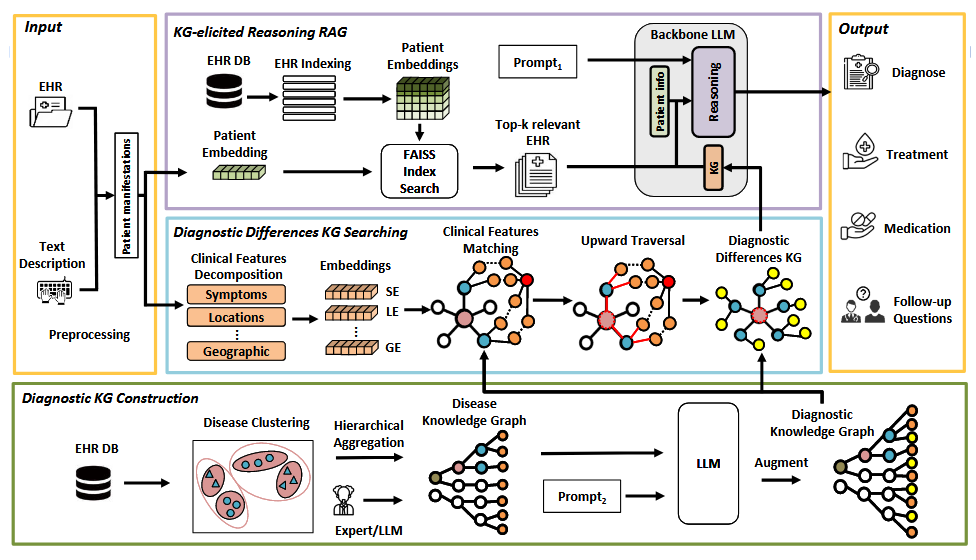

引言：
博士生小张（抓头）：“导师，我的模型又‘幻觉’了！生成的病例分析全是虚构的药理数据……”
导师（微笑）：“试试RAG+Search-o1吧，它能像侦探一样主动检索知识库，还能自我修正推理链。”
小张（瞪大眼）：“啥？AI还能自己查资料、做验证？”
导师（递咖啡）：“最新的模块化RAG，已经进化到‘思考-检索-验证’闭环了，走，带你看看顶会论文怎么玩转它！”
LLM虽然取得了比较卓越的成就，但是依旧存在像幻觉，知识过时以及推理过程比透明等状况。检索增强生成（RAG）通过语义相似度计算从外部知识库中检索相关文档块来增强LLM。通过引用外部知识，RAG有效地减少了生成事实不正确内容的问题。
RAG的三次进化：从“工具人”到“策略大师”
早期的Naive RAG像一本笨重的词典，只能机械检索与问题字面匹配的文档，生成答案时常常“断章取义”【遵循<检索-读取>框架】。而Advanced RAG引入了预检索优化（如动态分块、元数据过滤）和后检索重排序技术，像一名经验丰富的图书管理员，能精准定位知识片段。
真正的突破来自Modular RAG——它拆解任务为<搜索-记忆-路由-生成>等独立模块，像乐高一样灵活组合。例如，医疗领域的MedRAG通过知识图谱索引，将“湿浊蒙窍证”的中医术语与症状库动态关联，生成诊断时自动溯源权威文献。

RAG相关研究演变分为下图的四个阶段，这四个阶段是伴随着大模型的能力来演进的，其共性都是为了让模型更好的利用知识。
👇RAG研究的技术树。涉及RAG的阶段主要包括预训练、微调和推理。随着LLMs的出现，对RAG的研究最初集中在利用LLMs强大的情境学习能力上，主要集中在推理阶段。后续的研究更加深入，逐渐与LLM的微调相结合。研究人员还一直在探索通过检索增强技术在预训练阶段增强语言模型的方法。

🔍 ModularRAG的核心创新
| 模块 | 功能 | 案例 |
|---|---|---|
| 推理路由 | 动态选择检索策略 | 根据问题复杂度切换关键词/语义搜索 |
| 记忆增强 | 结合长期记忆与实时检索 | 对话系统记录用户病史，避免重复提问 |
| 假设生成 | 用HyDE技术反推潜在问题 | 生成“假设性症状”扩大检索范围 |
Search-o1：让AI像侦探一样“主动思考”
传统RAG被动等待查询，而Search-o1赋予模型“好奇心”：
- 问题分解：遇到复杂问题（如多步化学反应），先拆解为子问题；
- 主动检索：在推理链中插入“搜索触发符”，例如“检索：反式肉桂醛结构式”；
- 文档内推理：用Reason-in-Documents模块过滤冗余信息，提炼关键数据；
- 自我修正：若结果矛盾，自动启动二次检索并更新推理路径。

论文中，Search-o1基于QwQ-32B模型，在多跳QA任务上比标准RAG平均EM提高了23.2%，且就平均EM指标而言，Search-o1分别比RAG-QwQ-32B和RAgent-QwQ-32B高出29.6%和5.3%🚀
医疗Copilot实战：MedRAG如何拯救“过劳”中医模型？
MedRAG构建了一个全面的四层分层诊断KG，涵盖了各种疾病的关键诊断差异；提供了两个诊断知识图：一个侧重于慢性疼痛，另一个基于DDXPlus，一个大规模的合成数据集。
这种全面的组织可以提高疾病鉴别和诊断的准确性，从而为各种医疗系统提供更好的决策支持。

首先，从EHR数据库中提取潜在的诊断和相应的表现，通过聚类和层次聚合形成四层疾病KG。然后，使用LLM来增强具有关键诊断差异的图，将其转换为诊断KG。
【例子】设想一个场景：输入“口燥咽干+不耐疲劳”，传统LLM可能胡乱关联“阴虚火旺”，而MedRAG的解决方案是：
- 知识图谱检索：从《中医临床诊疗术语》中匹配“津液不足证”“燥干清窍证”等候选证候
- 多跳推理：结合“疲劳”特征，排除“湿浊冲心证”（通常伴随便溏、胸闷）；
- 生成溯源：答案附带证候定义和文献出处，杜绝“黑箱”输出。
💡 技术亮点：
- 混合索引：向量嵌入（症状关键词）+ 图结构（证候关联）；
- 动态分块：按“证候-症状-治法”三级划分文本，避免信息碎片化。
未来方向：RAG+推理的无限可能
- 多模态RAG：融入视觉检索（如病理切片图像），构建“图文互验”系统；
- 元认知优化：让模型评估自身知识盲区，触发定向检索；
- 低资源适配：通过Prompt压缩和子查询技术，在端侧设备部署轻量RAG。
结语：给科研人的“开卷考试”指南
RAG不再只是“拼凑答案”的工具，而是融合推理、验证、迭代的认知框架。无论是Search-o1的主动探索，还是MedRAG的领域深耕，都在重新定义LLM的“思考”边界。
📚 参考文献
- Search-o1: Agentic Search-Enhanced Large Reasoning Models
- Retrieval-Augmented Generation for Large Language Models: A Survey
- MedRAG: Enhancing Retrieval-augmented Generation with Knowledge Graph-Elicited Reasoning for Healthcare Copilot